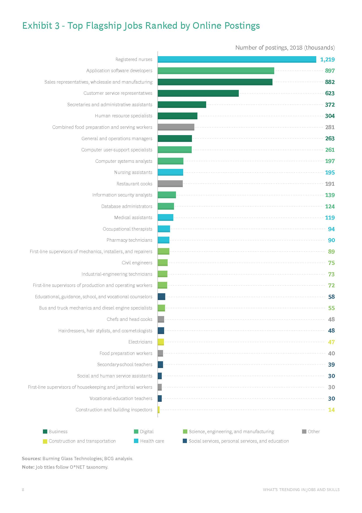
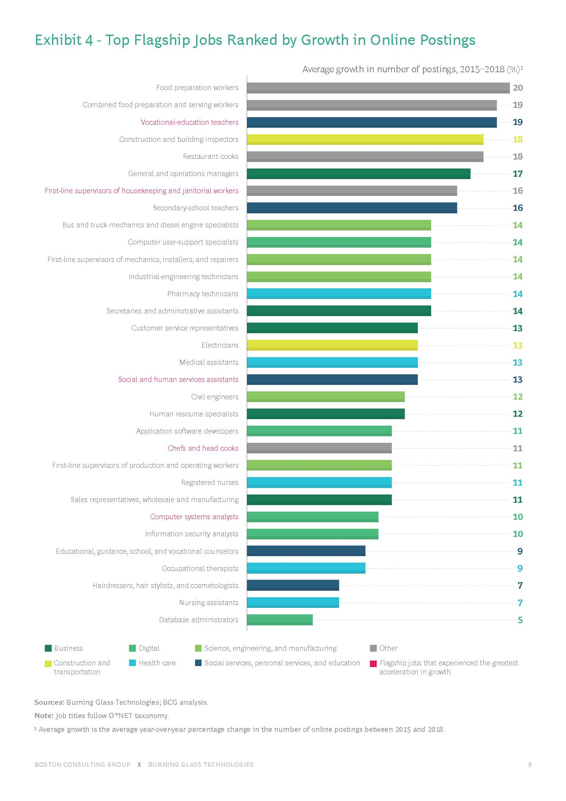
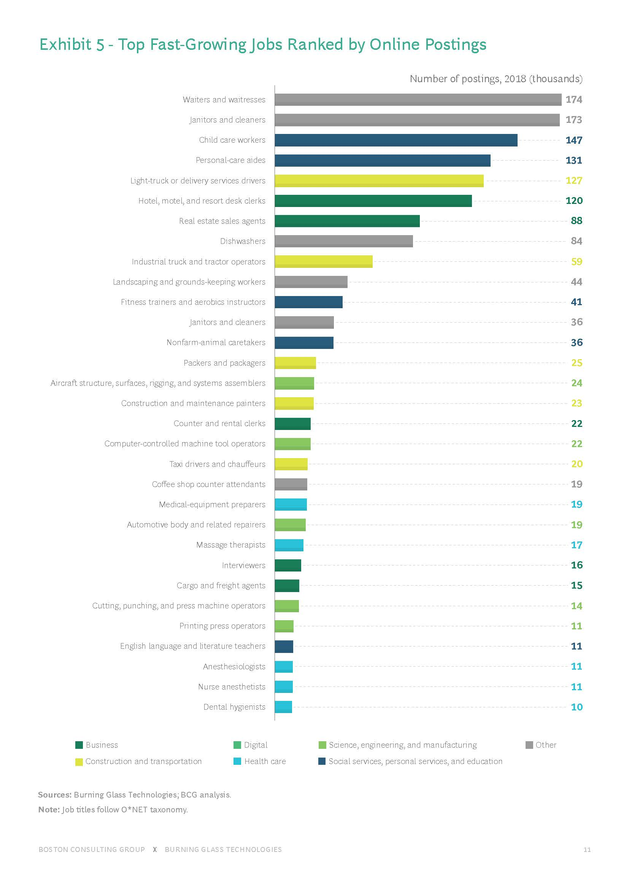
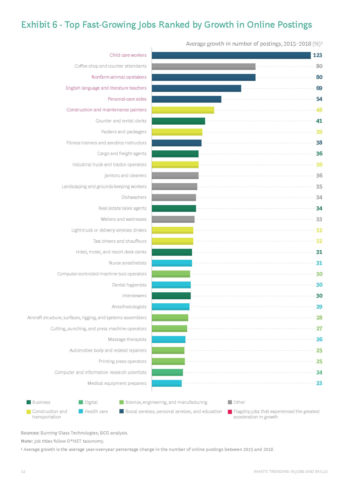
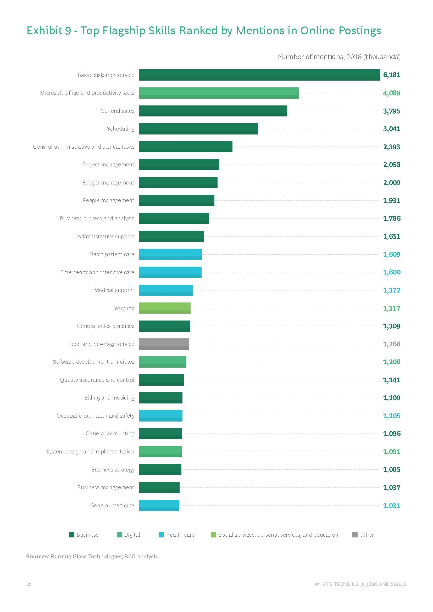
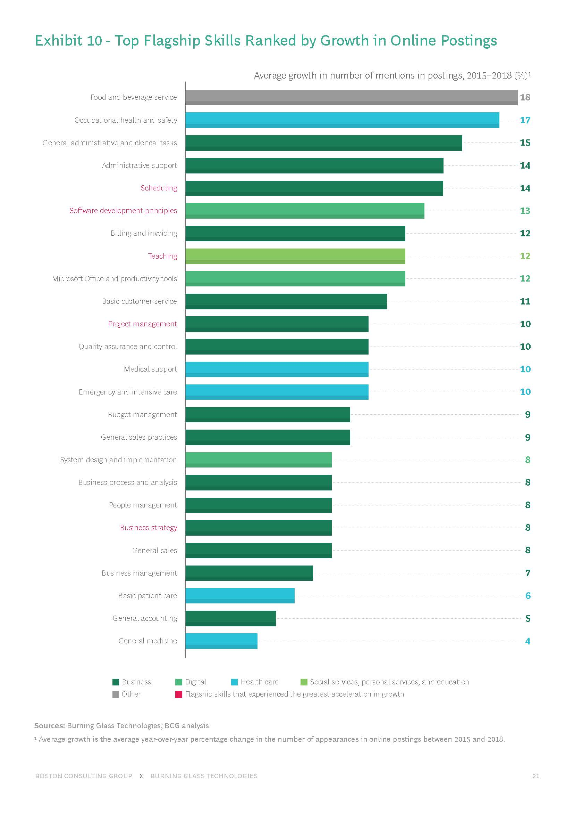
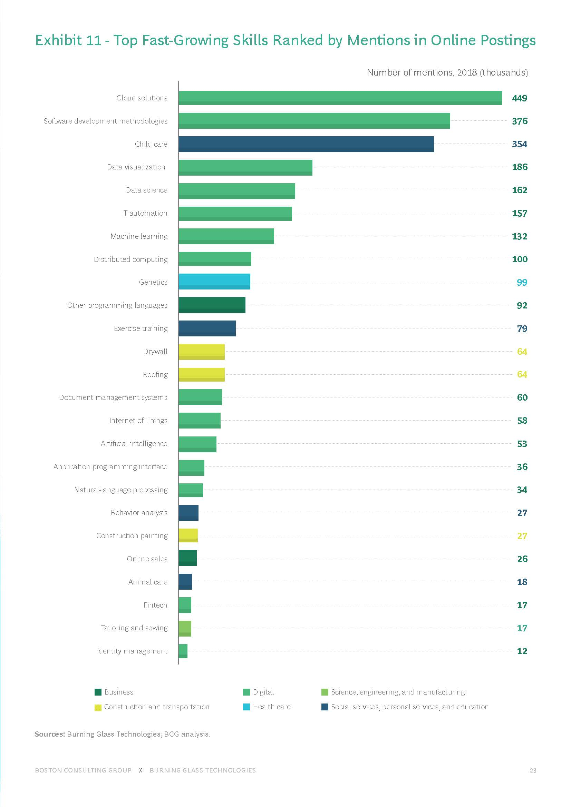
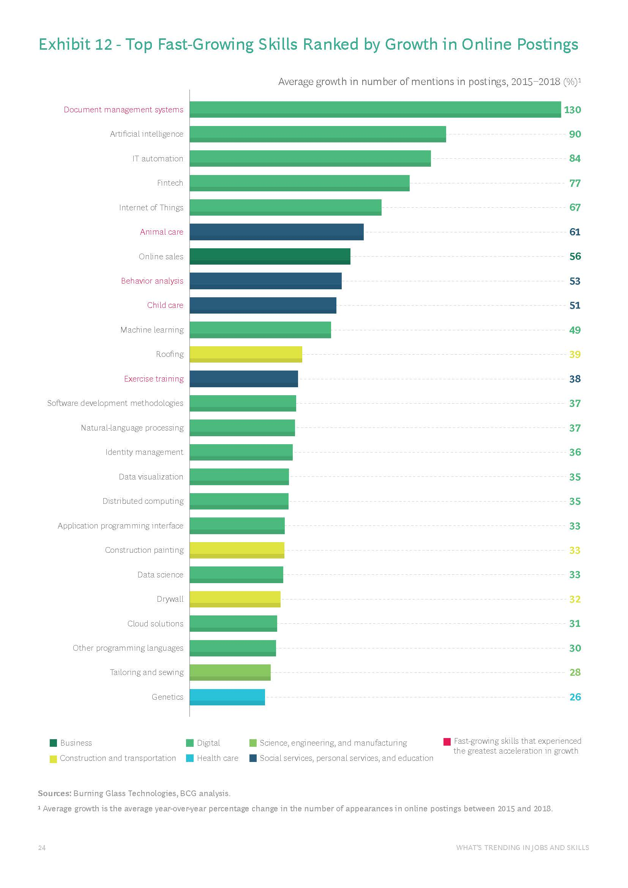
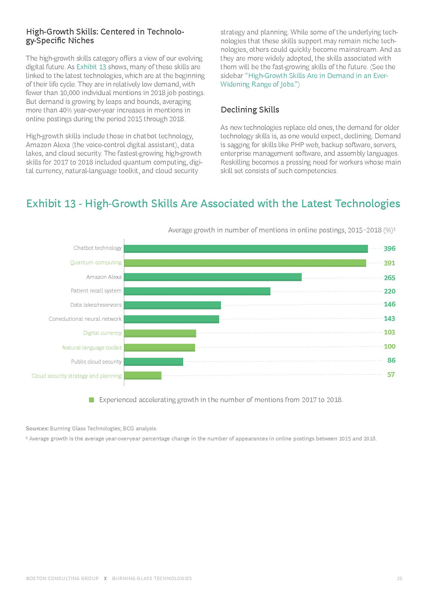
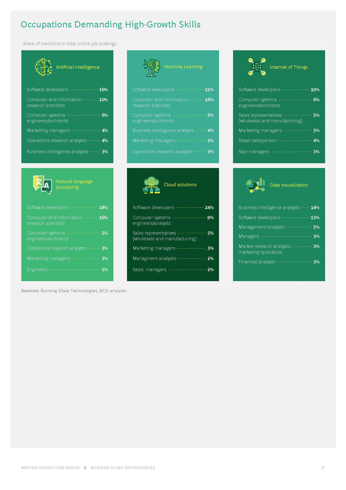

Indsutry Data
Burning Glass Technologies
What’s Trending in Jobs and Skills September 2019
September 2019By Rainer Strack, Elizabeth Kaufman, Adam Kotsis, Matt Sigelman, Dan Restuccia, and Bledi Taska
Click on the above below to view the pdf document
Exhibit 3 - Top Flagship Jobs Ranked by Online Postings
Exhibit 4 - Top Flagship Jobs Ranked by Growth in Online Postings
Exhibit 5 - Top Fastest Growing Jobs Ranked by Online Postings
Exhibit 6 - Top Fast-Growing Jobs Ranked by Growth in Online Postings
Exhibit 9 - Top Flagship Skills Ranked by Mentions in Online Postings
Exhibit 10 - Top Flagship Skills Ranked by Growth in Online Postings
Exhibit 11 - Top Flagship Skills Ranked by Mentions in Online Postings
Exhibit 12 - Top Fast-Growing Skills Ranked by Growth in Online Postings
Exhibit 13 - High-Growth Skills Are Associated with the Latest Technologies
Occupations Demanding High-Growth Skills
What are the Job Titles for your group’s ideal jobs?
How do each of these rank in terms of demand from employers?
From your group’s ideal jobs, you can identify a set of skills required for these jobs (we will refer to this as your group’s required skill set). These can be divided into general skills (communication, problem solving, writing etc) and IT-specific skills (Javascript, SQL, etc).
How do the IT-specific skills in your required skill set rank in terms of demand from employers?
How do the general skills in your required skill set rank in terms of demand from employers?
What are the three highest ranked IT-specific skills which are not in your required skill set?
What are the three highest ranked general skills which are not in your required skill set?
Having looked at your updated Burning Glass data, has your opinion of your ideal job changed? Why or why not?